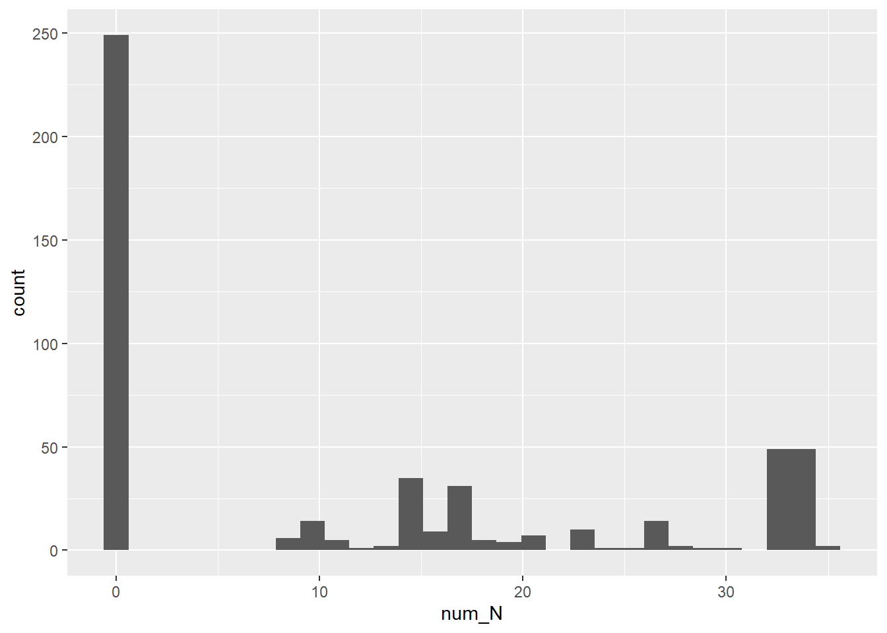
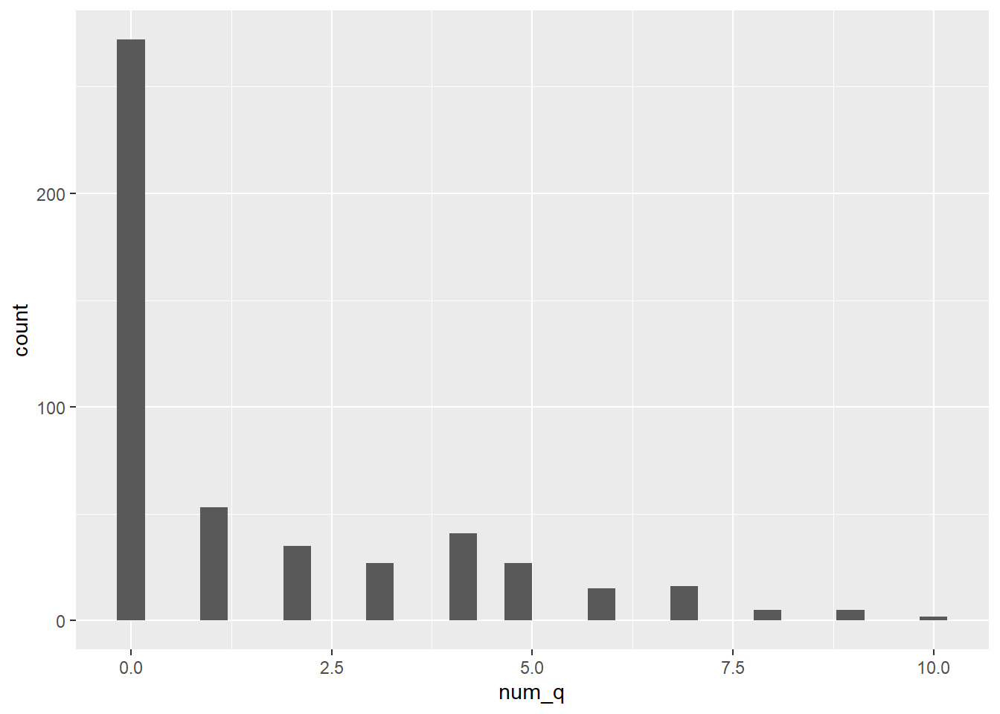

Last updated: 2019-09-20
Checks: 6 1
Knit directory: gene_project_v1/
This reproducible R Markdown analysis was created with workflowr (version 1.4.0). The Checks tab describes the reproducibility checks that were applied when the results were created. The Past versions tab lists the development history.
The R Markdown file has unstaged changes. To know which version of the R Markdown file created these results, you’ll want to first commit it to the Git repo. If you’re still working on the analysis, you can ignore this warning. When you’re finished, you can run wflow_publish to commit the R Markdown file and build the HTML.
Great job! The global environment was empty. Objects defined in the global environment can affect the analysis in your R Markdown file in unknown ways. For reproduciblity it’s best to always run the code in an empty environment.
The command set.seed(20190920) was run prior to running the code in the R Markdown file. Setting a seed ensures that any results that rely on randomness, e.g. subsampling or permutations, are reproducible.
Great job! Recording the operating system, R version, and package versions is critical for reproducibility.
Nice! There were no cached chunks for this analysis, so you can be confident that you successfully produced the results during this run.
Great job! Using relative paths to the files within your workflowr project makes it easier to run your code on other machines.
Great! You are using Git for version control. Tracking code development and connecting the code version to the results is critical for reproducibility. The version displayed above was the version of the Git repository at the time these results were generated.
Note that you need to be careful to ensure that all relevant files for the analysis have been committed to Git prior to generating the results (you can use wflow_publish or wflow_git_commit). workflowr only checks the R Markdown file, but you know if there are other scripts or data files that it depends on. Below is the status of the Git repository when the results were generated:
Ignored files:
Ignored: .Rproj.user/
Ignored: figures/
Ignored: results/
Unstaged changes:
Modified: analysis/fastq.Rmd
Note that any generated files, e.g. HTML, png, CSS, etc., are not included in this status report because it is ok for generated content to have uncommitted changes.
These are the previous versions of the R Markdown and HTML files. If you’ve configured a remote Git repository (see ?wflow_git_remote), click on the hyperlinks in the table below to view them.
| File | Version | Author | Date | Message |
|---|---|---|---|---|
| html | 876b491 | nati piland | 2019-09-20 | Build site. |
| html | a9a5856 | nati piland | 2019-09-20 | Build site. |
| Rmd | 79a51aa | nati piland | 2019-09-20 | wflow_publish(“analysis/fastq.Rmd”) |
library(tidyverse)Warning: package 'tidyverse' was built under R version 3.5.3-- Attaching packages --------------------------------------------------------------------------- tidyverse 1.2.1 --v ggplot2 3.2.1 v purrr 0.3.2
v tibble 2.1.3 v dplyr 0.8.3
v tidyr 1.0.0 v stringr 1.4.0
v readr 1.3.1 v forcats 0.4.0Warning: package 'ggplot2' was built under R version 3.5.3Warning: package 'tibble' was built under R version 3.5.3Warning: package 'tidyr' was built under R version 3.5.3Warning: package 'readr' was built under R version 3.5.3Warning: package 'purrr' was built under R version 3.5.3Warning: package 'dplyr' was built under R version 3.5.3Warning: package 'stringr' was built under R version 3.5.3Warning: package 'forcats' was built under R version 3.5.3-- Conflicts ------------------------------------------------------------------------------ tidyverse_conflicts() --
x dplyr::filter() masks stats::filter()
x dplyr::lag() masks stats::lag()#like the tree command on terminal
new_files <- dir("data",
recursive=TRUE,
full.names=TRUE)To subset the data use the [ operator. To find a string use the grepl function.
fastq_files <- new_files[grepl("fastq",new_files)]
fastq_1 <- read_lines(fastq_files[1])
fastq_2 <- read_lines(fastq_files[2])
head(fastq_1)[1] "@SRR097977.1 209DTAAXX_Lenski2_1_7:8:3:710:178 length=36"
[2] "TATTCTGCCATAATGAAATTCGCCACTTGTTAGTGT"
[3] "+SRR097977.1 209DTAAXX_Lenski2_1_7:8:3:710:178 length=36"
[4] "CCCCCCCCCCCCCCC>CCCCC7CCCCCCACA?5A5<"
[5] "@SRR097977.2 209DTAAXX_Lenski2_1_7:8:3:365:371 length=36"
[6] "GGTTACTCTTTTAACCTTGATGTTTCGACGCTGTAT" Fastq files have four lines per read. 1) header line has metadata 2) sequence 3) same metadata? 4) quality score per base
fastq_fields <- c("metadata",
"sequence",
"metadata2",
"score")
length(fastq_1)[1] 996#This part helps put an ID to all the reads in the fastq dataframe so that it can spread properly.
num_reads <- length(fastq_1)/4
read_id <- gl(num_reads, k=4)
fastq_fields <- rep_len(fastq_fields,
length.out = length(fastq_1))
length(fastq_fields)[1] 996tibbles)fastq_df <- tibble(read = read_id,
field = fastq_fields,
lines = fastq_1)
fastq_df <- fastq_df %>%
filter(field != "metadata2")
pivot_fastq_df <- fastq_df %>%
spread(key = field,
value = lines)head(pivot_fastq_df) %>%
pull(metadata)[1] "@SRR097977.1 209DTAAXX_Lenski2_1_7:8:3:710:178 length=36"
[2] "@SRR097977.2 209DTAAXX_Lenski2_1_7:8:3:365:371 length=36"
[3] "@SRR097977.3 209DTAAXX_Lenski2_1_7:8:3:663:569 length=36"
[4] "@SRR097977.4 209DTAAXX_Lenski2_1_7:8:3:715:205 length=36"
[5] "@SRR097977.5 209DTAAXX_Lenski2_1_7:8:3:639:209 length=36"
[6] "@SRR097977.6 209DTAAXX_Lenski2_1_7:8:3:721:225 length=36"#Take out the information from metadata into three different columns, and change length into an integer.
pivot_fastq_df <- separate(pivot_fastq_df,
metadata,
into = c("sr_id",
"tag",
"length"),
sep = " ")
pivot_fastq_df <- mutate(pivot_fastq_df,
length = str_replace(length,
pattern = "length=",
replacement = "")) %>%
mutate(length=as.integer(length))
#Make sure that all rows are 36
filter(pivot_fastq_df, length != 36)# A tibble: 0 x 6
# ... with 6 variables: read <fct>, sr_id <chr>, tag <chr>, length <int>,
# score <chr>, sequence <chr>Refactoring is changing code without changing its behavior. You do this because certain code is easier to change than other code: You’re rarely done when you think you’re done. A powerful way to do this is to take all your code and turn it into a function.
Let’s refactor our code to be a function that takes a fastq file and turns it into a data frame.
read_fastq <- function(file,name=file){
fastq_1 <- read_lines(file)
fastq_fields <- c("metadata",
"sequence",
"metadata2",
"score")
num_reads <- length(fastq_1)/4
read_id <- gl(num_reads, k=4)
fastq_fields <- rep_len(fastq_fields,
length.out = length(fastq_1))
fastq_df <- tibble(name = name,
read = read_id,
field = fastq_fields,
lines = fastq_1)
fastq_df <- fastq_df %>%
filter(field != "metadata2")
pivot_fastq_df <- fastq_df %>%
spread(key = field,
value = lines)
pivot_fastq_df <- separate(pivot_fastq_df,
metadata,
into = c("sr_id",
"tag",
"length"),
sep = " ")
pivot_fastq_df <- mutate(pivot_fastq_df,
length = str_replace(length,
pattern = "length=",
replacement = "")) %>%
mutate(length=as.integer(length))
return(pivot_fastq_df)
}fastq_df_1 <- read_fastq(fastq_files[1], name = "SRR097977")
fastq_df_2 <- read_fastq(fastq_files[2], name = "SRR098026")
#If you already have the dataframes, bind them.
fastq_df <- bind_rows(fastq_df_1,
fastq_df_2)
#A fancier way to do this is:
fastq_df <- map_df(fastq_files,
read_fastq)
fastq_df <- map2_df(fastq_files,
c("SRR097977", "SRR098026"),
read_fastq)The number of rows across fastq files that have an N in the sequence.
#Three ways to answer this.
fastq_df_n <- fastq_df[grepl("N", fastq_df$sequence),]
fastq_df_n <- fastq_df %>%
filter(grepl("N", fastq_df$sequence))
#For these last two, just look at the dimensions of the data. Or:
fastq_df %>%
filter(grepl("N", fastq_df$sequence)) %>%
group_by(name) %>%
summarise(num_N=n())# A tibble: 1 x 2
name num_N
<chr> <int>
1 SRR098026 249#Creating lists out of the sequences. As fundamental of a data type as vectors.
fastq_df <- fastq_df %>%
mutate(seq_list=str_split(sequence,
pattern = ""))
fastq_seq_list <- fastq_df$seq_list
#This is to get the first element of the list. This is the samd as fastq_df$sequence[2], except that seq_list gives you a vector of strings.
fastq_seq_list[[1]] [1] "T" "A" "T" "T" "C" "T" "G" "C" "C" "A" "T" "A" "A" "T" "G" "A" "A"
[18] "A" "T" "T" "C" "G" "C" "C" "A" "C" "T" "T" "G" "T" "T" "A" "G" "T"
[35] "G" "T"count_N <- function(x){
sum(x=='N')
}
count_N(fastq_seq_list[[1]])[1] 0map_int(fastq_seq_list, count_N) [1] 0 0 0 0 0 0 0 0 0 0 0 0 0 0 0 0 0 0 0 0 0 0 0
[24] 0 0 0 0 0 0 0 0 0 0 0 0 0 0 0 0 0 0 0 0 0 0 0
[47] 0 0 0 0 0 0 0 0 0 0 0 0 0 0 0 0 0 0 0 0 0 0 0
[70] 0 0 0 0 0 0 0 0 0 0 0 0 0 0 0 0 0 0 0 0 0 0 0
[93] 0 0 0 0 0 0 0 0 0 0 0 0 0 0 0 0 0 0 0 0 0 0 0
[116] 0 0 0 0 0 0 0 0 0 0 0 0 0 0 0 0 0 0 0 0 0 0 0
[139] 0 0 0 0 0 0 0 0 0 0 0 0 0 0 0 0 0 0 0 0 0 0 0
[162] 0 0 0 0 0 0 0 0 0 0 0 0 0 0 0 0 0 0 0 0 0 0 0
[185] 0 0 0 0 0 0 0 0 0 0 0 0 0 0 0 0 0 0 0 0 0 0 0
[208] 0 0 0 0 0 0 0 0 0 0 0 0 0 0 0 0 0 0 0 0 0 0 0
[231] 0 0 0 0 0 0 0 0 0 0 0 0 0 0 0 0 0 0 0 34 34 34 34
[254] 34 34 34 34 34 34 34 34 34 34 34 34 34 34 34 34 34 34 34 34 34 34 34
[277] 34 34 34 34 34 34 34 34 34 34 34 34 34 34 34 34 34 34 35 34 34 34 33
[300] 33 33 33 33 33 33 33 33 33 32 32 32 32 32 32 32 32 32 32 32 32 32 32
[323] 32 32 32 32 32 32 32 32 32 32 32 32 32 32 32 32 32 32 32 32 32 35 32
[346] 32 32 32 30 29 28 28 27 27 27 27 27 27 27 27 27 27 27 26 26 26 25 24
[369] 23 23 23 23 23 23 23 23 23 23 21 21 21 21 20 20 20 19 19 19 19 18 18
[392] 18 18 18 17 17 17 17 17 17 17 17 17 17 17 17 17 17 17 17 17 17 17 17
[415] 17 17 17 17 17 17 17 17 17 17 17 34 16 16 16 16 16 16 16 16 16 15 15
[438] 15 15 15 15 15 15 15 15 15 14 14 14 14 14 14 14 14 14 14 14 14 14 14
[461] 14 14 14 14 14 14 14 14 14 14 13 13 12 11 11 11 11 11 10 10 10 10 10
[484] 10 10 10 10 10 10 10 10 10 9 9 9 9 9 9fastq_df <- fastq_df %>%
mutate(num_N=map_int(seq_list, count_N))
ggplot(fastq_df, aes(x=num_N)) +
geom_histogram()`stat_bin()` using `bins = 30`. Pick better value with `binwidth`.
How many of the question mark scores are there at every read?
#Creating lists out of the sequences. As fundamental of a data type as vectors.
fastq_df <- fastq_df %>%
mutate(score_list=str_split(score,
pattern = ""))
fastq_score_list <- fastq_df$score_list
#This is to get the first element of the list. This is the samd as fastq_df$sequence[2], except that seq_list gives you a vector of strings.
fastq_score_list[[1]] [1] "C" "C" "C" "C" "C" "C" "C" "C" "C" "C" "C" "C" "C" "C" "C" ">" "C"
[18] "C" "C" "C" "C" "7" "C" "C" "C" "C" "C" "C" "A" "C" "A" "?" "5" "A"
[35] "5" "<"count_q <- function(x){
sum(x=='?')
}
#could also straight up make this function more generic
count_char <- function(x,char="?"){
sum(x==char)
}
count_q(fastq_score_list[[1]])[1] 1map_int(fastq_score_list, count_q) [1] 1 9 1 5 5 10 4 2 3 1 2 6 6 4 4 1 4 8 7 5 5 4 0
[24] 6 10 2 4 4 8 1 1 9 3 5 4 4 0 6 2 7 2 0 4 1 4 0
[47] 3 4 8 1 3 8 7 3 2 5 6 3 1 1 3 2 0 1 0 6 4 2 6
[70] 5 7 7 4 4 2 4 5 1 7 5 1 6 2 8 6 1 4 0 5 2 7 4
[93] 0 0 2 0 3 4 0 3 4 4 2 1 5 9 0 6 4 3 9 5 1 1 3
[116] 5 0 0 2 1 4 5 2 3 1 6 4 5 3 2 1 7 5 3 3 1 7 1
[139] 2 7 3 0 4 5 0 6 4 4 5 0 0 5 3 0 0 1 3 5 1 1 4
[162] 1 1 2 5 1 0 0 1 2 1 1 2 2 0 2 2 0 7 2 6 7 4 0
[185] 4 3 3 0 4 3 6 6 2 1 0 4 3 4 0 0 0 0 3 5 0 0 5
[208] 7 2 0 5 0 4 1 2 0 5 1 0 1 1 1 5 5 2 4 4 4 0 1
[231] 4 4 0 0 4 0 1 7 1 9 1 3 4 7 0 1 7 3 1 0 0 0 0
[254] 0 0 0 0 0 0 0 0 0 0 0 0 0 0 0 0 0 0 0 0 0 0 0
[277] 0 0 0 0 0 0 0 0 0 0 0 0 0 0 0 0 0 0 0 0 0 0 0
[300] 0 0 0 0 0 0 0 0 0 0 0 0 0 0 0 0 0 0 0 0 0 0 0
[323] 0 0 0 0 0 0 0 0 0 0 0 0 0 0 0 0 0 0 0 0 0 0 0
[346] 0 0 0 0 0 0 0 0 0 0 0 0 0 0 0 0 0 0 0 0 0 0 0
[369] 0 0 0 0 0 0 0 0 0 0 0 0 0 0 0 0 0 0 0 0 0 0 0
[392] 0 0 0 0 0 0 0 0 0 0 0 0 0 0 0 0 0 0 0 0 0 0 0
[415] 0 0 0 0 0 0 0 0 0 0 0 0 0 0 1 0 0 0 1 0 0 0 0
[438] 0 1 0 0 0 0 0 0 0 1 0 0 0 0 0 0 0 0 0 0 0 0 0
[461] 1 0 0 0 0 0 0 1 2 2 2 0 2 1 0 2 0 0 0 1 0 0 0
[484] 0 0 0 0 0 0 3 2 3 1 0 2 0 1 0fastq_df <- fastq_df %>%
mutate(num_q=map_int(score_list, count_q))
ggplot(fastq_df, aes(x=num_q)) +
geom_histogram()`stat_bin()` using `bins = 30`. Pick better value with `binwidth`.
sessionInfo()R version 3.5.0 (2018-04-23)
Platform: x86_64-w64-mingw32/x64 (64-bit)
Running under: Windows 10 x64 (build 18362)
Matrix products: default
locale:
[1] LC_COLLATE=English_United States.1252
[2] LC_CTYPE=English_United States.1252
[3] LC_MONETARY=English_United States.1252
[4] LC_NUMERIC=C
[5] LC_TIME=English_United States.1252
attached base packages:
[1] stats graphics grDevices utils datasets methods base
other attached packages:
[1] forcats_0.4.0 stringr_1.4.0 dplyr_0.8.3 purrr_0.3.2
[5] readr_1.3.1 tidyr_1.0.0 tibble_2.1.3 ggplot2_3.2.1
[9] tidyverse_1.2.1
loaded via a namespace (and not attached):
[1] tidyselect_0.2.5 xfun_0.9 haven_2.1.1 lattice_0.20-35
[5] colorspace_1.4-1 vctrs_0.2.0 generics_0.0.2 htmltools_0.3.6
[9] yaml_2.2.0 utf8_1.1.4 rlang_0.4.0 pillar_1.4.2
[13] glue_1.3.1 withr_2.1.2 modelr_0.1.5 readxl_1.3.1
[17] lifecycle_0.1.0 munsell_0.5.0 gtable_0.3.0 workflowr_1.4.0
[21] cellranger_1.1.0 rvest_0.3.4 evaluate_0.14 labeling_0.3
[25] knitr_1.25 fansi_0.4.0 broom_0.5.2 Rcpp_1.0.2
[29] scales_1.0.0 backports_1.1.4 jsonlite_1.6 fs_1.3.1
[33] hms_0.5.1 digest_0.6.20 stringi_1.4.3 grid_3.5.0
[37] rprojroot_1.3-2 cli_1.1.0 tools_3.5.0 magrittr_1.5
[41] lazyeval_0.2.2 crayon_1.3.4 whisker_0.4 pkgconfig_2.0.2
[45] zeallot_0.1.0 ellipsis_0.2.0.1 xml2_1.2.2 lubridate_1.7.4
[49] assertthat_0.2.1 rmarkdown_1.15 httr_1.4.1 rstudioapi_0.10
[53] R6_2.4.0 nlme_3.1-137 git2r_0.26.1 compiler_3.5.0